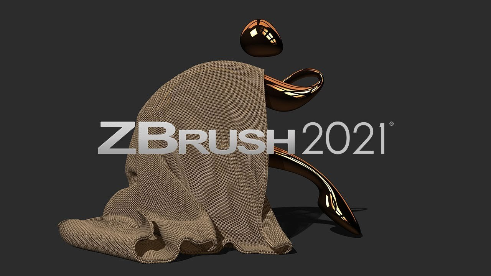

歷史參考｜ZBrush 2021 預告：布料動力與互動雕刻筆刷
這篇 2020 年報導記錄當時尚未發布的 ZBrush 2021 預覽，展示布料重力與碰撞、ClothHook／ClothDimple 筆刷，以及 MicroPoly 和模型厚度功能；不是今天的新版本消息。

角色製作 ★★★☆☆
完整分析
布料動力與皺褶雕刻技術
示範包含重力和碰撞的布料系統，也有以物理方式互動的雕刻筆刷：ClothHook 製作皺褶，ClothDimple 用於坐墊鈕扣處的凹陷。MicroPoly 則在預告中被描述為以預設幾何模擬粗布或鎖子甲結構的方向。
靜態角色服裝的製作價值
當時報導認為這些功能較偏向靜態角色衣物，而非完整的服裝紙樣設計系統。另有較大幾何的 NanoMesh 實例展示與 Dynamic Thickness 厚度工具，可作為觀察雕刻內處理服裝和重複細節的歷史參考。
預告階段與效能數字限制
文章刊出時未宣布發售日期，並把 ZBrush 2020.1 列為當時穩定版。雖展示 2020 與 2021 的速度對照，廠商未給加速數字；因此本篇只能解讀為預告記錄，不能補寫正式發售日或具體效能倍數。
BRIEF｜來源已驗證；證據深度較有限，完整分析會明確區分已知資訊與待驗證事項。